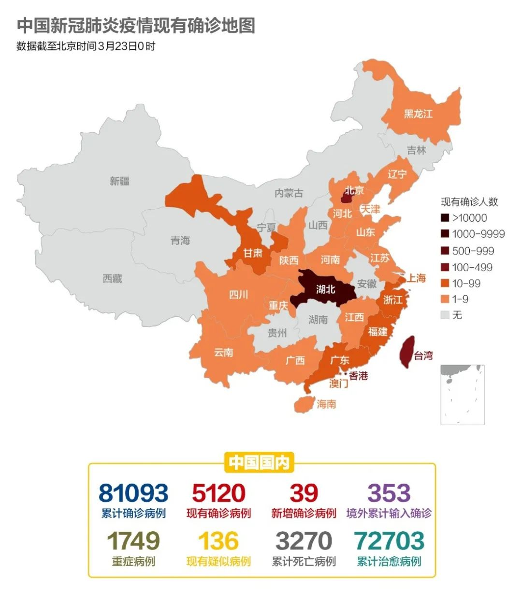
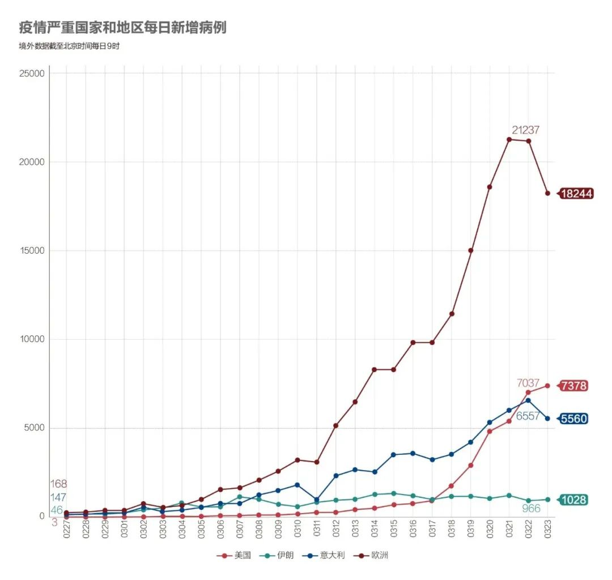
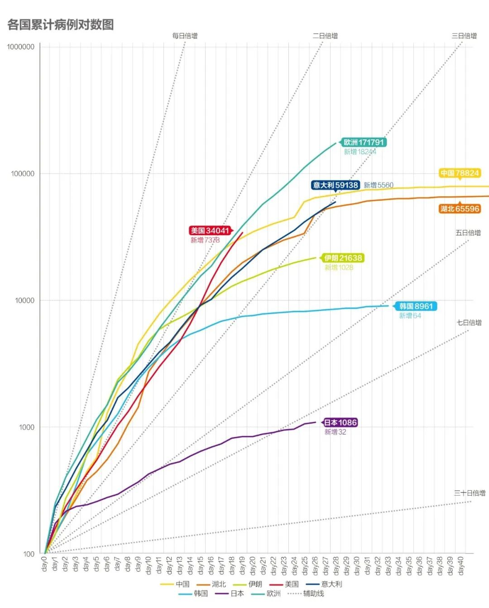
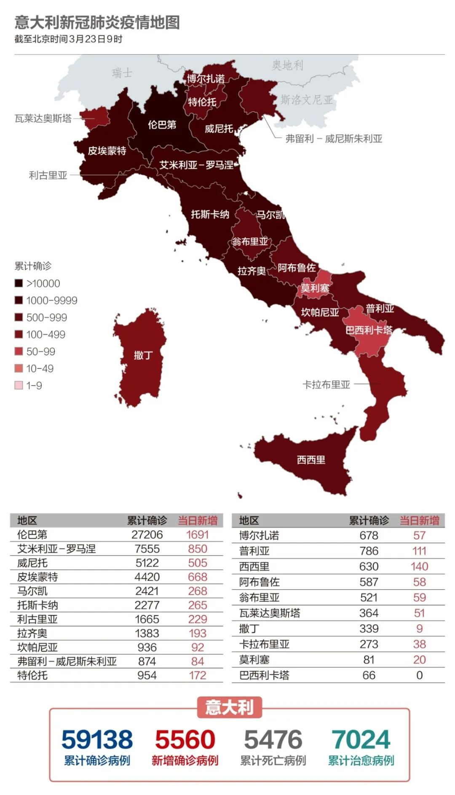
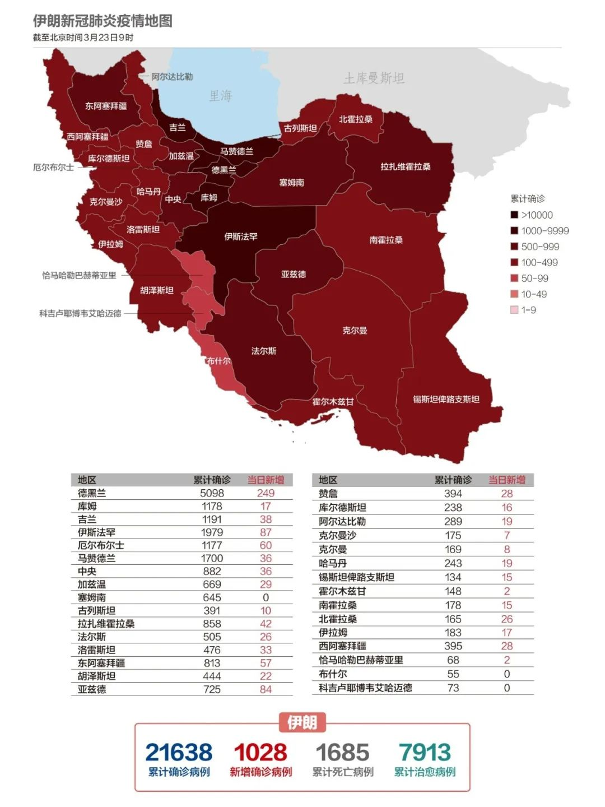

新加坡、澳大利亚“封国”！意大利全国“停产”，美国确诊人数突破3万…
原文链接 备份链接 截至北京时间3月22日12时，除中国外，184个国家和地区累计确诊222707例新冠肺炎，“钻石公主”号邮轮712例。 当前，欧美疫情仍旧快速蔓延。其中，意大利病例突破5万例，总理孔特要求全国停止所有非必要的生产活 …

国内多地周一重现早高峰。国际奥组委确认正式考虑延期举办东京奥运会。疫情令美国经济处在悬崖边缘。意大利对中国专家组的建议照单全收。

文 |《财经》数据研究员 徐进
图 |《财经》视觉中心 编辑 | 郝洲
一、国内多地重现车水马龙，湖北黄石首个解封
图1

今日国内简述：截至3月22日24时，国内报告新增确诊病例39例，全部为境外输入。湖北连续5日无新增确诊和疑似病例。3月17日，中国日发电量自春节以来首次实现增长，社会生产生活加速回归常态。今天是周一，全国多个主要大城市重现车水马龙，按百度指数北京甚至达到严重拥堵级。都市脉搏正在恢复。黄石成为湖北省第一个全面解封的城市，荆门市恢复公交客运，孝感市将取消单双号管控措施。
二、东京奥运会可能真的要延期了
图2

海外累计确诊病例已超过25万，是中国国内的三倍之多。世界卫生组织紧急项目负责人瑞安（Michael Ryan）表示，各国不能够单靠封城击退疫情，否则一旦解除活动限制及封城令，疫情可能会卷土重来。当务之急是要是检测及找出确诊患者及密切接触者，将他们隔离。
国际奥委会（IOC）官方今天凌晨确认，正在考虑延期举办2020年东京奥运会，但不会取消。加拿大奥委会和澳大利亚奥委会今日相继就东京奥运会发表声明，表示希望东京奥运会推迟举办。东京奥组委内部已经在试算奥运延期的成本和花费。
图3

图4

意大利果然如我们昨日所说，没有继续走湖北的线路，直接切向黄线，因此势将超越中国。考虑到意大利人口规模远小于中国，其能用于阻隔和救治的医疗资源、社会资源承载力堪忧。欧洲已比中国多出一倍，而增势未明确减缓。美国如期穿越了黄线，意味着总量超越中国已无悬念。若维持目前趋势，其与欧洲比肩甚至超越欧洲也已是大概率事件。
三、美国1/3确诊病例集中在纽约，二季度GDP或降50%
图5

美国确诊病例迅速突破3万。华盛顿州继纽约州之后成为美国第二个疫情“重大灾区”。截至22日，美国已有8个州宣布“居家隔离令”，覆盖美国人口的近三分之一。纽约市长白思豪称，美国目前1/3的新冠肺炎确诊病例在纽约，这一情况短期内不会得到改善，“事实是，形势正在恶化”。
特朗普总统已经启动《国防生产法案》，以“保证获得必要授权，优先生产政府合同项目，并将稀缺资源分配到最需要的地方”。
纽约证券交易所将于3月23日起首次关闭交易大厅，临时进行全面电子交易。美国圣路易斯联邦储备银行行长詹姆斯·布拉德22日预测称，美国第二季度的失业率可能会达到30%，这意味着美国失业率将超过上世纪30年代“大萧条”时期。他还预测美国第二季度GDP将出现50%的降幅。
四、英国以“全面封锁“恐吓居民，默克尔被迫居家隔离
图6

英国首相约翰逊22日晚警告说，如果许多公众仍然不理会政府的劝告，保持社交距离以防止新冠病毒的传播，政府将会在24小时后宣布，效仿意大利、西班牙及法国，实施全面封闭措施，包括限制人员的流动并实施宵禁，以及关闭除食品店及药店之外的所有其它商店等。
法国参议院与国民议会先后通过新冠肺炎疫情紧急应对法案。法案规定，自法案生效之日起法国将设立为期2个月的公共卫生紧急状态。在此期间，法国政府可通过发布行政法令的形式，限制人员外出和流动，征用必要的的物资与服务，并对企业和个人提供经济援助。
西班牙宣布国家紧急状态再延长15天。西班牙男高音歌唱家普拉西多·多明戈证实感染新冠病毒。
希腊从当地时间23日早6点开始在全国范围实施全面封闭、全民禁足措施。
根据俄政府令，23日起俄罗斯临时限制与所有国家的空中交通。除撤侨包机外，与每个国家仅保留一趟航线。俄罗斯与中国间将保留莫斯科至北京往返航程。
图7

意大利累计确诊接近6万例。中国驻意大利大使介绍称，对中国支援意大利专家提出的改进意见，意大利几乎是照单全收、悉数采纳。在意大利首都罗马，警方在街头截查行人并检查证件，如果发现有人在没有合理理由下出行的话，就会向其罚款。此外，除了超市、银行、药店及邮局外，所有商店都要关门停业。
意大利政府向美国国防部长马克·埃斯珀呼吁，要求美国提供军事援助以抗击疫情，提供像口罩和呼吸机这样的关键医疗设备。同时，意大利政府还要求，驻扎在意大利的美国军事人员向意当局提供医疗人员和战地医院，以支持正在那里抗疫的意大利军队。
图8

德国总理默克尔当地时间22日晚宣布，在全国禁止2人以上的聚会，但家庭成员被排除在外。专家称，如果不采取封锁措施，德国到4月底将有800万感染病例。德国各项民调也显示，超过2/3的民众赞成“封城”。默克尔本人将进行居家隔离，原因是曾为她提供过治疗的医生新冠病毒检测呈阳性。
五、伊朗拒绝美国援助：“你们自己留着用吧！”
图9

美国总统特朗普22日称愿意帮助朝鲜、伊朗等国抗击疫情。但伊朗最高领袖哈梅内伊表示伊朗有能力独自应对各种层面的问题与挑战。哈梅内伊称，“美国自身都面临（物资）短缺。所以你们还是留着自己用吧。”美国在3月18日刚刚宣布对伊朗增加新的制裁措施。
【特别说明：以上统计，2月28日前为世卫组织官方统计数据，数据截止时间为北京时间每日17时；从2月28日开始，数据由《财经》根据公开资料统计，截止时间为北京时间每日9时】
六、全球疫情数字速览：
1、【高管降薪50%】美国联合航空公司3月收入预计将同比减少15亿美元。4月和5月还将削减50%的航班。公司高级管理人员的工资也将削减50%。
2、【裁员2/3】澳大利亚第一大航空公司澳洲航空及旗下的捷星航空已停飞所有国际航班，于19日宣布三分之二的员工将从3月末开始暂时离开工作岗位，这意味着约二万人短期失业。新西兰航空公司也宣布削减85%的远程航线，并大幅裁员。
小结：国内多地周一重现早高峰，黄石成为湖北省首个全面解封的地级市。国际奥组委确认正式考虑延期举办东京奥运会。疫情令美国经济处在悬崖边缘，第二季度或出现50%衰退。德国总理默克尔被迫居家隔离。意大利对中国专家组的建议照单全收。

▲点击图片查看更多疫情报道
责编 | 刘思言 siyanliu@caijing.com.cn
本文为《财经》杂志原创文章，未经授权不得转载或建立镜像。如需转载，请在文末留言申请并获取授权。
原文链接 备份链接 截至北京时间3月22日12时，除中国外，184个国家和地区累计确诊222707例新冠肺炎，“钻石公主”号邮轮712例。 当前，欧美疫情仍旧快速蔓延。其中，意大利病例突破5万例，总理孔特要求全国停止所有非必要的生产活 …
原文链接 备份链接 从股市的表现来看，市场更倾向于认同用短期的不便和经济痛苦来换取对病毒的控制 文 |《财经》特派记者 金焱 发自华盛顿 编辑 | 苏琦 新冠肺炎疫情持续肆虐，美国和欧洲为应对疫情影响经济，纷纷出台各种刺激救助政策，试图 …
原文链接 备份链接 根据当地时间3月8日18时意大利卫生部公布的最新数据，意大利现有新冠病毒患者6387例，死亡366例，治愈622例，累计确诊感染新冠病毒总人数为7375例，较3月7日18时新增1492例，新增133例死亡病例。 据外 …
原文链接 备份链接 文 |《财经》特派记者 金焱 发自华盛顿 编辑 | 苏琦 2020年3月6日，我打算给自己放一天的假。 算起来自从武汉疫情暴发，我在1月21采写了第一篇文章《美确诊首例新型病毒病例，或成全球性公共卫生危机事件信号》 …
原文链接 备份链接 现在校园里还没有人戴口罩，但国内的亲人总是打电话说美国疫情严重，出门一定要戴口罩，这让他非常为难。 文｜李 莹 今年春节，我到美国旅游，结果因为新冠肺炎疫情，回程航班被取消了……一言难尽。这是我滞留美国的第42天，西 …